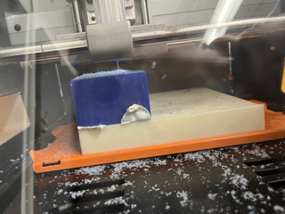
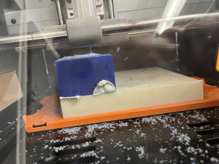

Week 8: CNC Milling, Molding & Casting
frog üê∏
Molding and Casting
For the molding and casting week, I made a frog. (mold) (and cast)
Materials Needed:
- silicone
- a frog (or object of your choosing)
- qtips
- hot glue gun
- plastic cup
- box cutter
- bismuth alloy
Steps to make frog mold:
- Cut Qtip in half and apply both to the object with hot glue to serve as the pour hole and the vent hole.
- Mix silicone in a 1:1 ratio, or by following the box directions (probably read them first)
- Secure the object in the cup so that it doesn't touch any of the edges but is solidly in there
- Pour the silicone in, wait for it to cure, usually about a couple hours or overnight.
- After the silicone is solid, carefully use the box cutters to cut open the mold and remove the object. You can spray mold release if you want to it at this point.
- Heat up your bismuth alloy in the oven until it swirls smoothly when you pick it up.
- Carefully pour it into you mold through one of the holes.
- Wait a few minutes for the metal to cool, then remove from the mold!


collection of buddies:
CNC Milling
For the CNC milling, I wanted to iterate off of Rebecca's mushrooms, but mine failed as well and I was not able to re mill because of a conference I had to attend. To make the design, I went to fusion 360 and designed a 3D incut mold that would result in one mushroom poking out of the wax. Prior to designing and cutting, I had discussed with Kassia that the reason why Rebecca's mushrooms failed was because the depth that was set was deeper than what the drill bit could achieve. So, I decreased the depth and also changed the mushroom shape.
 

I then uploaded my file into the small cnc machine with a wax block and it carved it..... some what right.... I'm still a little unsure on how to get it smoother and might revisit it later on in the course. I think I may have done too little layers, which caused it to look a little chunky.
More Casting
I also casted a ring out of bismuth alloy and it was hella cute. Sand down any rough edges that there might be!